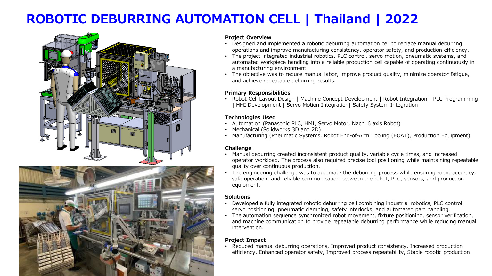

← Back to projects
Robotics • Thailand • 2022
Robotic Deburring Automation Cell
Nachi robot cell integrating PLC, HMI, servo motion, pneumatic clamping and safety.
Panasonic PLCHMIServo motorNachi 6-axis robotSolidWorksPneumaticsEOAT

Overview
Engineering context
Designed and implemented a robotic deburring cell to improve consistency, safety, efficiency and repeatability.
Responsibilities
My contribution
Robot-cell layout, machine concept, robot integration, PLC/HMI programming, servo integration and safety integration.
Challenge
What needed to be solved
Replace variable manual deburring with safe, accurate and repeatable robotic production.
Solution
Engineering approach
Integrated robot motion, fixture positioning, pneumatic clamping, sensor verification, safety interlocks and communication.
Impact
Project outcomes
- Reduced manual deburring
- Improved consistency
- Improved operator safety
- Stable robotic production